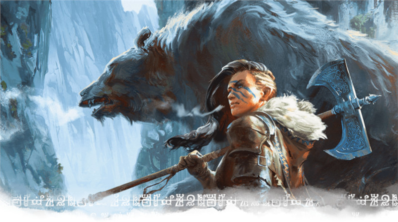

Maître des bêtes
Un maître des bêtes est un rôdeur qui s’est lié avec une bête des terres qu’il arpente. Certains se battent aux côtés d’un loup loyal, d’autres avec un serpent volant, un serpent venimeux géant ou même un ptéranodon des jungles primitives de Chult. Un rôdeur qui choisit de devenir un maître des bêtes suit un chemin laborieux mais, avec attention particulière portée à votre compagnon animal, il pourra devenir un puissant guerrier.
Capacités du maître des bêtes
Le rôdeur gagne quatre capacités de sous-classe aux niveaux 3, 7, 11 et 15. En résumé, vos capacités de sous-classe vous permettent :
- De gagner l'aide d’un compagnon animal, vous permettant de le commander pour effectuer des actions en et hors combat et de lui donner des bonus liés à votre bonus de maîtrise.
- De commander votre bête pour effectuer des actions autres que des attaques au prix d'une action bonus.
- De commander votre bête pour attaquer plus d'une fois lorsqu'elle prend l'action Attaquer.
- De permettre aux sorts que vous lancez sur vous d'affecter également votre compagnon animal.
Avantages du maître des bêtes
Jouer un rôdeur maître des bêtes vous octroie le compagnon animal le plus puissant du jeu, même comparé au familier du Pacte de la Chaîne de l'occultiste ou à l'artificier forgeron de guerre mais, pour cela, il faudra choisir sagement. Comme discuté plus en détail en dessous, il y a de nombreuses options géniales pour un compagnon animal, mais encore plus de bêtes qui vous gêneront en combat autant qu'elles vous aideront.
Le compagnon animal d'un maître des bêtes s'améliore offensivement et défensivement au fil de votre montée en niveau. Même si vous devez utiliser votre action pour lui commander d'attaquer au début, vous gagnez ensuite la capacité d'échanger une de vos attaques (avec Attaque supplémentaire) pour donner l'ordre à votre bête d'attaquer. Encore plus tard, votre bête peut attaquer plusieurs fois quand vous lui donnez l'ordre d'attaquer, vous permettant d'échanger une de vos attaques pour plusieurs de la part de votre compagnon. Une bête avec une seule puissante attaque, comme un serpent venimeux géant, ou un monstre avec une attaque nécessitant d'agripper une créature, comme une grenouille géante, profite énormément de cette attaque additionnelle.
Au-delà de ça, certaines bêtes ont une mobilité avantageuse permettant au rôdeur de facilement Aider ses alliés à distance, faisant du maître des bêtes un personnage polyvalent en attaque et en soutien. Si vous avez un compagnon serpent volant, vous pouvez utiliser votre action pour lui ordonner de voler jusqu'à 18 m vers un ennemi, utiliser l'action Aider et s'en aller en utilisant la capacité Vol agile pour s'enfuir sans provoquer d'attaques d'opportunités. Le roublard de votre groupe, si vous en avez un, peut faire bon usage de cet avantage pour obtenir une Attaque sournoise contre un ennemi.
Inconvénients du maître des bêtes
Même s'il est vrai que de nombreux avantages de l'archétype du maître des bêtes sont souvent oubliés, on ne peut pas nier que cette sous-classe a des problèmes. Certains de ces problèmes sont des carences mécaniques légitimes, comme l'absence de sorts bonus du maître des bêtes (un inconvénient partagé avec l'archétype de chasseur). D'autres sont des problèmes d'options équilibrées qui ne sont pas amusantes, comme avoir à trouver un nouveau compagnon animal si le vôtre meurt. Et d'autres sont les deux, comme avoir à sacrifier votre propre action à bas niveau pour ordonner à votre bête d'attaquer.
UNEARTHED ARCANA
Un article de l'Unearthed Arcana présente plusieurs options qui corrigent certains des plus gros défauts du maître des bêtes. Particulièrement, les nouvelles options de compagnon du rôdeur éliminent le risque de tomber sur une des nombreuses « options pièges » des compagnons animaux de faible FP et permet de ressusciter votre compagnon animal s'il meurt durant vos aventures. Même si ce sont encore des options en cours de test, elles valent le coup d'œil. Si vous aimez ce que vous voyez, demandez à votre MD si vous pouvez les utiliser.
La plus grosse difficulté que les nouveaux joueurs maîtres des bêtes rencontrent est l'immense liste de compagnons animaux parmi laquelle choisir, allant du FP 0 au FP 1/4. Cela requiert non seulement que le joueur creuse dans une ressource officiellement réservée au MD, le Monster Manual, mais aussi d'avoir une connaissance profonde du jeu pour choisir une bête utile. Certaines options, comme le faucon, semblent emblématiques mais n'apportent finalement que très peu d'aide car elles ne peuvent pas vraiment participer aux combats et sont incapables de communiquer avec leur rôdeur, faisant d'elles de piètres éclaireurs. La plupart des options les plus puissantes, comme le serpent venimeux géant ou la grenouille géante, sont des choix singuliers et peu emblématiques, donc des choix improbables pour des nouveaux joueurs.
Le problème des inconvénients du maître des bêtes a été discuté en long, en large et en travers sur d'innombrables réseaux sociaux et forums d’optimisation et n'a pas besoin d'être plus argumenté ici. Aussi, de nombreux correctifs existent pour cette sous-classe, comme autoriser votre compagnon animal à continuer une action (comme Aider ou Attaquer) aux tours suivants jusqu'à ce que vous lui ordonniez d'effectuer une autre action, ou autoriser à ordonner à votre compagnon d'attaquer au prix d'une action bonus au lieu d'une action ou de sacrifier une attaque.
Exemple de personnage
Si vous créez un rôdeur maître des bêtes depuis le niveau 1, soyez conscient que vous n'accéderez pas à votre sous-classe avant le niveau 3. Lors de la création de personnage, vous devriez choisir une race qui vous donne un bonus en Dextérité, Constitution ou Sagesse ; idéalement au moins deux des trois. Vous pouvez jouer un rôdeur qui se focalise sur la Force au lieu de la Dextérité et utilise de grandes armes de corps à corps plutôt que deux armes légères ou tire à l'arc, mais c'est peu conventionnel. Pour cette raison, jouer un elfe des bois ou un halfelin robuste sont vos meilleurs choix : tous deux vous donnent un gros bonus en Dextérité et un petit bonus en Constitution ou Sagesse, ainsi que des traits utiles.
Bien que jouer un gnome des forêts vous donne +2 en Intelligence, une caractéristique bien moins importante, gagner la possibilité de parler avec des bêtes de taille P peut être utile si vous avez un compagnon animal de cette taille. D'un autre côté, si vous jouer une race de taille P (comme gnome ou halfelin) et choisissez un compagnon animal de taille M, vous pouvez le chevaucher comme une monture ! Chevaucher une araignée loup géante ou voler sur un ptéranodon est juste génial.
Comme d'habitude, l'historique de votre personnage est à votre convenance. Certains rôdeurs sont nés dans la civilisation et ont ressenti l'appel sauvage dès leur plus jeune âge alors que d'autres ont vécu leur vie entière dans la nature. De ce fait, sauvageon ou ermite sont des historiques de départ standards pour un rôdeur alors que soldat, acolyte ou marin pourrait être une manière intéressante de s'émanciper des clichés.
Pour votre équipement, choisissez une armure d'écailles si vous jouez un rôdeur non conventionnel avec une faible Dextérité. Sinon, choisissez une armure de cuir. De même, sauf si vous avez une raison bien spécifique de vouloir une arme courante, choisir deux épées courtes est le bon chemin à suivre. En tant que maître des bêtes, vous aurez souvent à sacrifier votre action pour permettre à votre bête d’attaquer. De ce fait, le choix de votre arme n'a pas une grande importance jusqu'au niveau 5 où vous gagnez Attaque supplémentaire et la capacité d'échanger seulement une de vos attaques pour laisser votre compagnon animal attaquer. Alors, combattre avec deux armes devient très tentant car cela vous permet de faire une attaque avec votre action Attaquer puis une seconde avec l'action bonus accordée par le combat à deux armes.
Au niveau 1, regardez ce que vous préférez le plus : vous battre au corps à corps avec une épée courte dans chaque main ou de loin avec un arc long. Une fois que vous connaissez votre préférence...
Style de combat
Votre première décision majeure dans la construction de votre personnage vient au niveau 2, quand vous devez choisir un Style de combat. Les rôdeurs ont plusieurs options mais les meilleures sont Archerie et Combat à deux armes. Archerie vous donne un sérieux bonus de précision quand vous combattez avec des armes à distance (pas uniquement avec un arc !) et Combat à deux armes vous octroie un petit bonus de dégâts quand vous porter deux armes. Archerie est probablement le meilleur style globalement, mais votre concept de personnage devrait surpasser ce qui est mécaniquement « optimal ».
Défense est un Style de combat tout à fait raisonnable si vous avez des défenses médiocres mais, de manière générale, investir dans l’attaque est mieux pour les rôdeurs. Considérez seulement le Style de combat Duel si vous jouez un rôdeur non conventionnel basé sur la Force avec une arme à une main et un bouclier.
Sorts
Votre seconde décision majeure vient aussi au niveau 2 ! À ce niveau, vous gagnez la capacité de lancer des sorts issus d'une liste spécifiques aux rôdeurs. Bien que votre sélection de sorts soit plus limitée et que vous gagniez accès à des sorts puissants plus lentement que des classes entièrement dédiées à la magie, vous rétablissez l’équilibre avec votre robuste arsenal de combat. Prenez le temps avant d'avoir accès à votre sous-classe au niveau 3 pour définir votre rôle au sein du groupe. Comme ça, vous saurez de quels sorts votre groupe a besoin de manière régulière.
Lorsque vous atteignez le niveau 2, vous apprenez deux sorts de niveau 1 de la liste du rôdeur. Contrairement à certaines classes de lanceurs de sorts, une fois qu’un rôdeur apprend un sort, il connaît ce sort pour toujours. Vous pouvez « troquer » un sort connu contre un autre sort de votre liste quand vous gagnez un niveau, mais c'est tout. À partir de là, vous apprenez un nouveau sort de rôdeur au niveau 3 puis à chaque niveau impair. Vous accédez aussi à un nouveau niveau de sort au niveau 5 puis tous les quatre niveaux. C'est à ce moment que réapprendre des sorts devient important. Si vous connaissez des sorts de bas niveau qui ne sont plus utiles, vous pouvez les échanger un par un pour des sorts de niveau supérieur pour vous adapter à la montée en difficulté des rencontres.
En tant que sous-classe concentrée sur l'attaque, vous devriez commencer par prendre deux sorts offensifs de niveau 1. À partir de là, vous pouvez juger de quels sorts vous avez le plus besoin pour soutenir votre groupe et vous-même. Choisir quelques sorts défensifs ou de soutien au fil du temps ne peut pas faire de mal, mais vous vous assurerez que votre attaque est toujours au meilleur de sa forme. De plus, comme mentionné ci-dessus, un grand nombre de sorts de rôdeur demandent de la concentration et vous ne pouvez pas avoir plus d'un sort de concentration actif à la fois, alors soyez prudent. Cette liste n'est toutefois là que pour vous aider à démarrer si vous jouez un maître des bêtes pour la première fois. Avec l'expérience, vous pouvez bien entendu choisir d'autres sorts.
- Lien avec une bête (offensif/social)
- Soins (soutien)
- Frappe piégeuse (offensif/défensif ; concentration)
- Grêle d'épines (offensif ; concentration)
- Marque du chasseur (offensif/exploration ; concentration)
- Communication avec les animaux (social)
Cette liste de sort a pour but de vous aider à sélectionner des sorts tout en vous laissant la liberté de choisir les vôtres et de vous démarquer de la masse. Néanmoins, il y a un sort qu'aucun maître des bêtes ne devrait occulter : lien avec une bête. Même si ce sort coûte une action à lancer, c’est une telle amélioration pour vous et votre bête que vous devriez l'apprendre dès que vous atteignez le niveau 3. Tant que vous maintenez votre concentration, vous pouvez communiquer par télépathie avec votre compagnon animal s'il est dans votre ligne de vue et la bête à un avantage aux jets d'attaque contre toute créature à 1,50 m ou moins de vous.
Bien sûr, ce sort est bien moins puissant si votre compagnon animal a la capacité Tactique de groupe, comme le loup.
Compagnon animal
Une fois le niveau 3 atteint et cette sous-classe choisie, vous gagnez la capacité Compagnon du rôdeur vous permettant de choisir un compagnon animal. Si vous voulez que votre compagnon animal vous aide en combat, vous devriez choisir une bête avec un facteur de puissance de 1/4 (le plus que vous pouvez choisir). Et parmi ces bêtes, vous devriez choisir celles avec des attaques puissantes ou des avantages offensifs. Par exemple :
- Grenouille géante. L’attaque Engloutissement de la grenouille lui permet de manger les ennemis de taille P, les écartant temporairement du combat ! Cette capacité est géniale contre des groupes d'ennemis comme les gobelins ou les kobolds, mais elle perd de sa superbe au fur et à mesure que les ennemis deviennent plus grands.
- Araignée loup géante. Pour un rôdeur plus discret, ce terrifiant compagnon a une vitesse d’escalade rapide et une puissante morsure venimeuse. Les gnomes et les halfelins peuvent chevaucher cet animal pour sauter des murs !
- Panthère. La capacité Bond de ce chat de la jungle peut le transformer en machine à dégâts du moment qu’il a l’espace suffisant.
- Ptéranodon. Cette bête préhistorique est remarquable pour sa capacité Vol agile qui lui permet d'éviter les attaques d’opportunités et sa taille, faisant d’elle une monture volante pour les rôdeurs de taille P comme les halfelins et les gnomes !
- Loup. Compagnon classique du rôdeur, le loup est l'une des puissantes bêtes « emblématiques » à avoir à vos côtés. Ses capacités Tactique de groupe et Odorat et ouïe aiguisés le rendent utile à la fois en combat et en exploration.
Dons
Au niveau 4, vous avez le choix entre Amélioration de caractéristiques et un don. Choisir Amélioration de caractéristiques permet d’augmenter une caractéristique de +2 (comme augmenter votre Sagesse de 16 à 18) ou augmenter deux caractéristiques de +1 (comme augmenter votre Sagesse de 15 à 16 et votre Constitution de 13 à 14). Augmenter vos caractéristiques vous rend meilleur dans un large éventail de choses. Par exemple, augmenter votre Sagesse diminue les chances que vos ennemis résistent à vos sorts, augmente vos chances de toucher avec un sort et vous rend meilleurs aux jets de Sagesse.
Les dons, d’un autre côté, vous donnent une capacité spéciale qui pourrait être plus utile dans des circonstances particulières contrairement à l’amélioration générale apportée par Amélioration de caractéristique. La Dextérité, la Constitution et la Sagesse sont sûrement vos caractéristiques les plus importantes puisqu'elles gouvernent vos capacités offensives, défensives et d'incantations. Comme vous avez plusieurs caractéristiques à augmenter avec Amélioration de caractéristiques, vous pourriez choisir un seul don qui vous parle vraiment pour consolider votre concept de personnage, mais certains dons seront sûrement plus utiles que d'autres à votre personnage. Par exemple :
Maître-arbalétrier. Oubliez les arcs longs. Ce que vous voulez, c’est une arbalète ; si vous utilisez ce don tout du moins. Ignorer les restrictions de recharge et le désavantage des attaques à distance en corps à corps est extrêmement puissant. Une fois au niveau 5, faites attaquer votre bête, faites une attaque avec une épée courte et utiliser votre action bonus pour tirer avec votre arbalète de poing.
Combattant à deux armes. Ce don augmente à la fois votre attaque et votre défense quand vous porter une arme dans chaque main. Un don intéressant à prendre, surtout si votre Dextérité est à sa valeur maximale de 20.
Combattant monté. Si vous êtes un personnage de taille P chevauchant une bête de taille M, ce don à un potentiel intéressant car il vous permet de protéger votre compagnon du danger lorsque vous le monter. Vous ne gagnerez probablement pas d’avantage à l’attaque vu que votre monture est de taille M, mais cela pourrait arriver de temps en temps.
Tireur d’élite. Si vous êtes un rôdeur avec un arc long et le Style de combat Archerie, ce don peut vous transformer en canon laser mobile, réduisant les ennemis en lambeaux avec des flèches infligeant régulièrement 20 points de dégâts en une seule fois. Ignorer les abris est un avantage non négligeable en plus des dégâts. Si vous ordonnez à votre compagnon animal de vous Aider à distance au prix d’une action bonus, ce don peut même devenir injuste.

Basé sur un article de James Haeck, traduit par Nathyouss